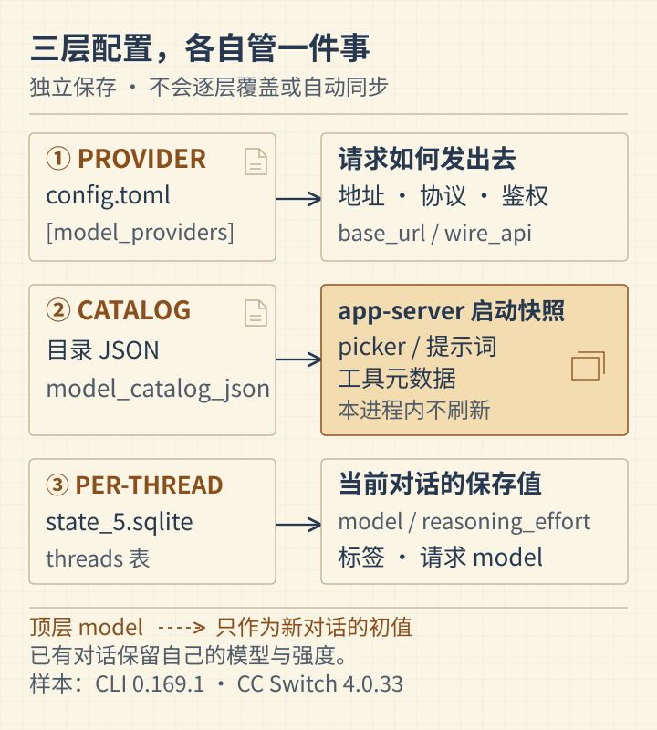
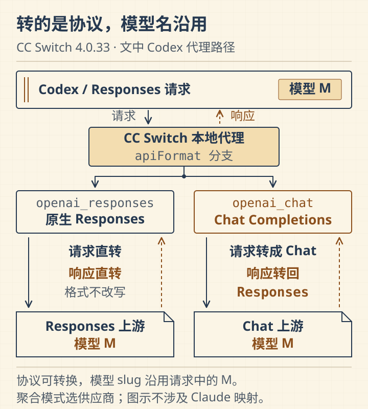
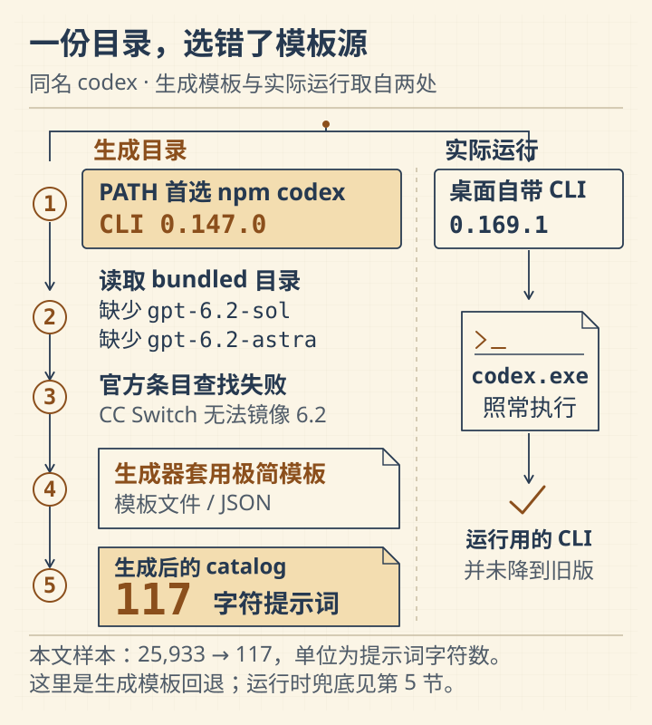
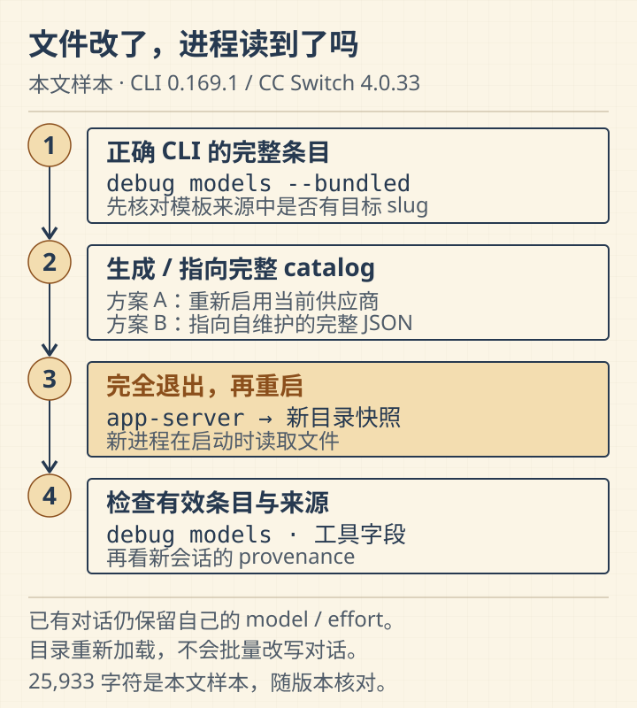

一、Codex 的模型配置分三层，互不同步
| 层 | 存哪 | 何时读 | 作用 |
|---|---|---|---|
| ① Provider | config.toml 的 [model_providers.<id>] |
每个请求 | base_url、wire_api、鉴权 |
| ② Catalog | model_catalog_json 指向的 JSON |
app-server 启动时读一次，进程内不刷新 | 模型的 prompt、工具能力、推理档位、显示名 |
| ③ Per-thread | state_5.sqlite 的 threads.model / threads.reasoning_effort |
打开或恢复对话时 | 这条对话实际用哪个模型、什么强度 |
三者的关系：
config.toml顶层model = "..."只是新对话的种子值。- 改它不会修改任何已存在的对话。
- 界面模型标签读的是 ③；picker 能选什么读的是 ②；请求发出去的 model 字段读的是 ③。
因此"配置改了"和"界面变了"和"请求变了"是三件独立的事，各自有各自的观测点。

model 只为新对话提供初值；目录快照、当前对话与连接参数各自核对。二、界面显示逻辑
Desktop 端 app.asar 里的渲染代码：
let eB = eW?.displayName ?? z ?? formatMessage({id:"composer.mode.local.model.custom"})
- 有
displayName就显示名字，去掉gpt-前缀（stripGptPrefix）。 - 没有才显示 "自定义"（locale 键
composer.mode.local.model.custom， 描述是 "Custom model from config"）。
"自定义"是 Codex 对"模型来自 config 而非官方订阅目录"的固有分类，官方标记为 not planned，与是否经过代理无关。
强度标签来自同一 locale 文件：composer.mode.local.reasoning.xhigh.label = 极高、
max.label = Max。
三、CC Switch 的三种模式与"路由"的实际含义
源码：GitHub farion1231/cc-switch
| 模式 | 行为 | 配置侧改动 |
|---|---|---|
| 直连 direct | 请求不经过 CC Switch | 只改写 config.toml 的 base_url 和 key |
| 路由 proxy | 请求经本地服务转发 | base_url → http://127.0.0.1:15721/v1，key → PROXY_MANAGED |
| 聚合 stack | 按模型把请求分给多家供应商 | 生成合并目录 |
路由只在协议不一致时做转换。 判定逻辑（src-tauri/src/proxy/providers/codex.rs:83）：
pub fn should_convert_codex_responses_to_chat(provider, endpoint) -> bool {
is_codex_responses_endpoint(endpoint)
&& codex_provider_uses_chat_completions(provider) // meta.apiFormat == "openai_chat"
}
供应商是原生 Responses（apiFormat = "openai_responses"）时，第 2～4 步转换不发生，
请求直接转给上游。其官方文档原话：
"供应商原生就是 Responses 的……请求直接发往上游，不做任何格式改写。"
CC Switch 的模型映射（src-tauri/src/proxy/model_mapper.rs）只处理 Claude 的
haiku/sonnet/opus/fable 档位，对 Codex 不做模型替换。
结论：CC Switch 的"路由"= 协议转换 + 故障转移 + 请求日志，它不选模型、不改模型名。

apiFormat 决定。图示对应文中版本的 Codex 代理路径。四、判断"是否真的在路由"的四个检查点
# 1. 模式声明
cat ~/.cc-switch/live-state.json # {"codex":{"mode":"direct"|"proxy"}}
# 2. 数据库开关
sqlite3 ~/.cc-switch/cc-switch.db \
"select app_type, proxy_enabled, enabled from proxy_config where app_type='codex'"
# 3. 端口是否有进程监听
netstat -ano | grep 15721 # 无输出 = 没有转发服务
# 4. 配置里 base_url 指向哪
grep -A3 '\[model_providers' ~/.codex/config.toml # 本地 127.0.0.1 才是路由
补充：proxy_request_logs 表中的记录若 data_source='codex_session'、
provider_id='_codex_session'，那是从 Codex 会话日志导入的统计，不是代理记账，
不能用来判断是否在路由。
五、模型名从哪来
模型能选什么，取决于第 ② 层 catalog 的来源，有三种：
- 内置 slug：模型名与该版本内置条目一致，直接用内置 metadata。
- 远程目录：
<base_url>/models?client_version=x.y.z，需返回 Codex 格式{"models":[...]}（只有 ID 列表不够）。自定义路径用model_catalog_url。 - 本地文件：
model_catalog_json = "绝对路径"，启动时加载，替换内置目录。
若目录里没有该 slug，Codex 不会拒绝，而是用兜底元数据
（codex-rs/models-manager/src/model_info.rs:98 model_info_from_slug()）：
上下文 272k、无推理档位、无 apply_patch、无 search，prompt 用通用
BASE_INSTRUCTIONS，并打一条 warning。
所以"能发请求"与"模型行为正确"是两件事。
六、一个实际遇到的 catalog 质量问题
CC Switch 生成的 cc-switch-model-catalog.json 使用一个极简模板
（src-tauri/src/resources/codex_native_responses_template.json，1099 字节）作底，
只覆盖 slug / display_name / 窗口等少数几项。
同一条 gpt-6.2-sol 的对比：
| 字段 | Codex 内置条目 | CC Switch 生成条目 |
|---|---|---|
| 字段数 | 40 | 27 |
| system prompt 长度 | 25,933 字符 | 117 字符 |
| apply_patch_tool_type | freeform |
缺失（退化为 shell 写文件） |
| supports_search_tool | true | false |
| multi_agent_version | v2 | 缺失 |
| experimental_supported_tools | 5 项 | [] |
117 字符的 prompt 全文：
"You are Codex, a coding agent. You and the user share the same workspace and collaborate to achieve the user's goals."
成因（已查实）：catalog 生成时调用的模板源是本机 codex debug models --bundled
（src-tauri/src/codex_config.rs:1914），而这个命令解析到的二进制不一定是桌面端
在用的那个。详见下一节的候选顺序与实锤。
症状：模型名正确、请求可达，但工具集与提示词退化。
6.1 根因实锤：which codex 指向一个过期的 npm 垫片
CC Switch 的模板源按以下顺序解析（codex_config.rs:1581 CODEX_CLI_FIXED_CANDIDATES，
之后追加桌面版候选）：
- PATH 上的
codex（所有平台，第一位） - Homebrew 的三个固定路径
- 最后才是桌面版自带的
%LOCALAPPDATA%\OpenAI\Codex\bin\<版本>\codex.exe（版本目录按修改时间新→旧取最新）
本机实际情况：
which codex
→ <npm global bin>\codex # npm 垫片，2026-08-12 安装
codex --version
→ codex-cli 0.147.0 # 落后桌面端两代
实测 0.147.0 的内置目录只有 gpt-5.6 / 5.5 / 5.4 系列，没有 6.2-sol / 6.2-astra。
于是生成这两个条目时 find_codex_official_model()（codex_config.rs:2403）找不到
官方镜像，按源码走向 codex_catalog_model_entry() 的极简模板 → 117 字符裸奔。
而 6.1-sol / 6-astra 两条之所以有完整的 21K 指令，是因为 provider 行里存了显式
baseInstructions 覆盖（spec.base_instructions 非空路径）——特例，不是通用机制。
关键澄清：受污染的只有 CC Switch 生成的 catalog 元数据。桌面端实际运行的是
bin/<version-hash>/codex.exe（0.169.1，未受 npm 垫片影响），请求、rollout、
界面全部正常。这不是客户端 bug，是"生成目录时选错了二进制"的链路问题。
上游也在收敛同类问题：CC Switch v4.0.36 发版说明提到 "聚合模式下新发布的官方模型（如 GPT-6.2）要很久才出现……获取列表时报的 Codex 版本会参考桌面版自带的 CLI"，而本机跑的是 4.0.33。

6.2 修复方案（二选一，都绕过 npm 垫片）
方案 A（推荐）——清除过期垫片，让候选列表落到桌面版 CLI：
npm uninstall -g @openai/codex
# 或直接删除 <npm global bin>\codex*
# 之后任选其一：
# 1) 重装最新 CLI：npm install -g @openai/codex
# 2) 不装——CC Switch 会退到桌面版 bin/0.169.1
然后在 CC Switch 里对当前供应商重新点一次"启用"（触发目录重新生成）， 完全退出并重启 Codex。密钥、路由配置均不变，变的只有目录内容。
方案 B——不动系统环境，自行维护 catalog：从 0.169.1 的
codex debug models --bundled 取出完整条目，只改 slug / display_name，
写入独立 JSON 并让 model_catalog_json 指向它。这也是官方网关文档推荐的别名做法。

6.3 修复后的验证清单
# 1. 确认候选解析到了正确的二进制
which codex && codex --version # 应为 0.169.x，或不存在（由 CC Switch 落到桌面版）
# 2. 确认该二进制的内置目录里有目标模型
codex debug models --bundled | grep -c "gpt-6.2-sol" # ≥1
# 3. 确认重新生成的 catalog 恢复完整条目
python -c "
import json
d = json.load(open(r'%CODEX_HOME%\cc-switch-model-catalog.json', encoding='utf-8'))
for m in d['models']:
bi = m.get('base_instructions') or ''
print(m['slug'], len(bi))
"
# 期望：gpt-6.2-sol / gpt-6.2-astra 的指令长度回到 25933（与官方一致）
# 6.1-sol / gpt-6-astra 保持 21769 / 21420（显式覆盖，不受影响）
# 4. 确认 Codex 实际加载了新目录（必须先完全退出重启）
codex debug models | python -c "
import sys, json
d = json.load(sys.stdin)
for m in d['models']:
print(m['slug'], m.get('shell_type'), m.get('apply_patch_tool_type'))
"
# 期望：6.2-sol 的 shell_type=unified_exec、apply_patch=freeform
# 5. roll 里的 provenance 应指向模型条目而非退化为占位
grep -o '"provenance":{[^}]*}' <新会话的 rollout.jsonl> | head -1
七、排查命令清单
# 内置目录（完整 metadata，与账号无关）
codex debug models --bundled
# 当前生效目录（合并 model_catalog_json 之后）
codex debug models
# 每条对话保存的模型与强度
sqlite3 ~/.codex/state_5.sqlite \
"select model, reasoning_effort, updated_at from threads order by updated_at desc limit 20"
# 每轮请求实际发出的模型（rollout）
grep -m1 '"turn_context"' <rollout 文件> # payload.model
# 供应商实际支持哪些模型
curl -H "Authorization: Bearer <key>" <base_url>/models
# 配置中有不认识的字段直接报错
codex --strict-config
rollout 文件路径：~/.codex/sessions/YYYY/MM/DD/rollout-<时间>-<uuid>.jsonl，
完整路径在 state_5.sqlite 的 threads.rollout_path 列。
session_meta 事件里的 base_instructions.provenance.model 记录了这条会话的
系统提示词来自哪个模型条目，是验证 catalog 是否生效的直接证据。
八、要点归纳
- Provider、Catalog、Per-thread 三层各自独立，改一层不会同步另外两层。
- Catalog 只在 app-server 启动时读一次；改了
model_catalog_json必须重启进程， 否则 picker 不变。 - 修改
config.toml的model只影响新建对话，已有对话保持自己的保存值。 - 界面标签读 per-thread 值；请求 model 字段也读 per-thread 值； 但 picker 可选范围读 catalog 快照。
- CC Switch 的路由是协议转换，不做模型映射；判断是否在路由看端口、
live-state.json、proxy_config三处。 - 模型名可达不等于能力完整；catalog 缺条目时 Codex 会用兜底元数据， 表现正常但工具与 prompt 退化。
- 工具生成的 catalog 需要核对：用
codex debug models对比字段数与 prompt 长度。 which <tool>上的同名工具不一定是你在用的那个。生成类工具（如 CC Switch） 解析二进制时按候选顺序取第一个，PATH 上的过期 npm 垫片会静默劫持整个链路； 客户端本身正常、只有中间层产物退化，是这类问题的典型指纹。
附：文件与代码位置
~/.codex/config.toml—— provider、默认 model~/.codex/cc-switch-model-catalog.json—— CC Switch 生成的 catalog~/.cc-switch/live-state.json、~/.cc-switch/cc-switch.db（表：providers / proxy_config / proxy_request_logs）~/.codex/state_5.sqlite→threads（model / reasoning_effort / rollout_path）~/.codex/sessions/**/rollout-*.jsonl→session_meta/turn_context- CC Switch 源码（GitHub
farion1231/cc-switch）：src-tauri/src/proxy/providers/codex.rs—— 路由转换判定src-tauri/src/proxy/model_mapper.rs—— 模型映射（仅 Claude）src-tauri/src/codex_config.rs:1338——codex_catalog_model_entrysrc-tauri/src/codex_config.rs:1581——CODEX_CLI_FIXED_CANDIDATES（PATH 优先）src-tauri/src/codex_config.rs:1795——codex_cli_candidates()（桌面版最后）src-tauri/src/codex_config.rs:1914—— 模板源debug models --bundledsrc-tauri/src/codex_config.rs:2403——find_codex_official_model（镜像查找）src-tauri/src/codex_config.rs:2430——codex_official_model_entry（镜像生成）src-tauri/src/services/provider/codex_client_catalog.rs—— 目录"代次"说明
- Codex 源码（GitHub
openai/codex）：codex-rs/models-manager/src/model_info.rs:98——model_info_from_slug()codex-rs/config/src/config_toml.rs——model_catalog_json仅启动加载codex-rs/protocol/src/openai_models.rs:1074——base_instructions提升为model_messages.instructions_template
系列导航
本篇是「造物手记」系列的技术解剖篇之一。系列主线：把「Agent 是怎么干活的」一件件拆开看。
License
MIT